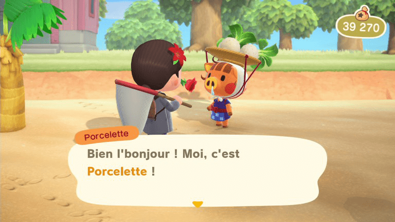
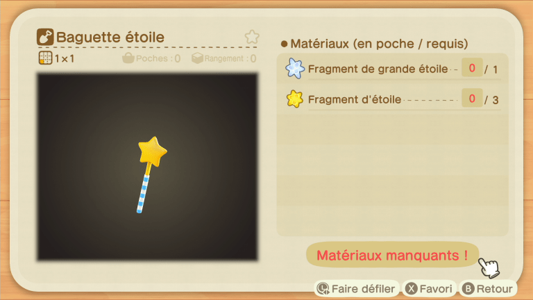

Pro Tips
TODO
- Astuce & Techniques (add more)
- Ajouter les notes de patch
Missions:
- Able Sisters : Achetez au moins 5 000 clochettes de vêtements à Mabel au Nook's Cranny, puis parlez-lui la troisième fois qu'elle est en ville.
- Bâtiment des services aux résidents : Après l'arrivée des trois villageois pour lesquels vous avez construit des maisons, Tom Nook vous annoncera la mise à niveau.
Un artisanat plus rapide
Une fois que vous avez commencé à élaborer une recette et que les matériaux sont mélangés, appuyez plusieurs fois sur A pour accélérer le processus.Rétablir la durabilité de l'outil
Pour redonner à votre outil toute sa durabilité, personnalisez-le sur n'importe quel établi.Remarque : cela ne fonctionne pas avec les haches ou les outils fragiles.
Arbres à meubles
Chaque jour, il y a deux arbres sur votre île qui vous donneront un meuble si vous les secouez. Il y a au moins un arbre sur chaque île mystérieuse qui fera également tomber un meuble. Remarque : les meubles ne tombent que si vous secouez l'arbre plutôt que de le frapper avec une hache, et les arbres fruitiers ne font pas tomber de meubles.Obtenir des îles à cinq étoiles
La principale chose requise pour obtenir une île de quatre à cinq étoiles est la couverture de la décoration. Chaque carré à carreaux blancs sur votre mini-carte et votre carte principale désigne une zone. Pour avoir droit à cinq étoiles, vous devez avoir au moins une décoration dans chaque carré de cette carte, y compris les zones rocheuses dans les coins supérieurs de la carte et toutes les plages.Ensuite, il suffit d'avoir suffisamment de décorations totales, de villageois et d'installations pour que le score de points cachés de votre île dépasse un certain seuil pour atteindre cinq étoiles.
Table des poissons üêü
Que ce soit dans les rivières, les lacs ou l'océan, une multitude d'espèces de poisson nagent dans les fonds marins durant toutes les saisons.
Certains sont plus présents que d'autres et il est compliqué de compléter l'aquarium de votre musée de A à Z sans connaître ces informations cruciales.
Pour les clochettes ou pour le musée, voici la liste complète de tous les poissons dans Animal Crossing New Horizons ! Ceux-ci sont classés par saison, donc soyez un peu aventurier et fouiller ce guide pour trouver votre bonheur !
(n'hésitez pas à faire un CTRL+F et de taper le nom du poisson que vous cherchez pour le trouver plus facilement)
| Anchois | Toute l'année | 4h - 21h | Océan | 200 | Petite | Rare | |
| Arapaïma | de juin à septembre | 16h - 9h | Rivière | 10000 | Énorme | Très rare | |
| Arowana | de juin à septembre | 16h - 9h | Rivière | 10000 | Moyenne | Très rare | |
| Ayu | de juillet à septembre | Toute la journée | Rivière | 900 | Petite / moyenne | Commun | |
| Bar | Toute l'année | Toute la journée | Rivière | 400 | Grande | Commun | |
| Bar commun | Toute l'année | Toute la journée | Océan | 400 | Très grande | Commun | |
| Bichir | de juin à septembre | 21h - 4h | Rivière | 4000 | Grande | Rare | |
| Bouvière | de novembre à mars | Toute la journée | Rivière | 900 | Minuscule | Commun | |
| Brochet | de septembre à décembre | Toute la journée | Rivière | 1800 | Moyenne / grande | Rare | |
| Calmar | de décembre à août | Toute la journée | Océan | 500 | Moyenne | Rare | |
| Carangue grosse tête | de mai à octobre | Toute la journée | Océan | 4500 | Énorme | Rare | |
| Carassin | Toute l'année | Toute la journée | Rivière | 160 | Petite | Commun | |
| Cardeau | Toute l'année | Toute la journée | Océan | 800 | Grande | Rare | |
| Carpe | Toute l'année | Toute la journée | Étang | 300 | Moyenne | Commun | |
| Carpe koï | Toute l'année | 16h - 9h | Étang | 4000 | Moyenne | Rare | |
| Chevaine | Toute l'année | 9h - 16h | Rivière | 200 | Minuscule | Commun | |
| Chinchard | Toute l'année | Toute la journée | Océan | 150 | Petite | Commun | |
| Clione | de décembre à mars | Toute la journée | Océan | 1000 | Minuscule | Commun | |
 |
Combattant | de mai à octobre | 9h - 16h | Rivière | 2500 | Petite | Rare |
| Coryphène | de mai à octobre | Toute la journée | Océan (ponton) | 6000 | Très grande | Rare | |
| Crabe chinois | de septembre à novembre | 16h - 9h | Rivière | 2000 | Petite | Rare | |
| Crapet | Toute l'année | 9h - 16h | Rivière | 180 | Petite | Commun | |
| Cyprin doré | Toute l'année | 9h - 16h | Étang | 1300 | Minuscule | Très rare | |
| Coelacanthe | Toute l'année | Toute la journée | Océan (pluie/neige) | 15000 | Énorme | Très rare | |
| Dai yu | de décembre à mars | 16h - 9h | Rivière (falaise) | 15000 | Grande | Très rare | |
| Dorade | de juin à septembre | 4h - 21h | Rivière | 15000 | Très grande | Très rare | |
| Ecrevisse | d'avril à septembre | Toute la journée | Étang | 200 | Petite | Commun | |
| Eperlan | de décembre à février | Toute la journée | Rivière | 320 | Petite | Commun | |
| Esturgeons | de septembre à mars | Toute la journée | Estuaire | 10000 | Très grande | Très rare | |
| Fondule barré | d'avril à août | Toute la journée | Étang | 300 | Minuscule | Commun | |
| Gar | de juin à septembre | 16h - 9h | Étang | 6000 | Énorme | Très rare | |
| Gobie d'eau douce | Toute l'année | 16h - 9h | Rivière | 400 | Petite | Rare | |
| Grand requin blanc | de juin à septembre | 16h - 9h | Océan | 15000 | Énorme | Très rare | |
| Grenouille | de mai à août | Toute la journée | Étang | 120 | Petite | Commun | |
| Guppy | d'avril à novembre | 9h - 16h | Rivière | 1300 | Minuscule | Commun | |
| Hippocampe | d'avril à novembre | Toute la journée | Océan | 1100 | Minuscule | Commun | |
| Limande | d'octobre à avril | Toute la journée | Océan | 300 | Moyenne | Commun | |
| Loche d'étang | de mars à mai | Toute la journée | Rivière | 400 | Petite / Moyenne | Commun | |
| Lune de mer | de juillet à septembre | 4h - 21h | Océan | 4000 | Énorme | Rare | |
| Macropinna | Toute l'année | 21h - 4h | Océan | 15000 | Petite | Très rare | |
| Marlin bleu | de juin à septembre et de novembre à avril | Toute la journée | Océan (ponton) | 10000 | Énorme | Très rare | |
| Murène | d'août à octobre | Toute la journée | Océan | 2000 | Très grande | Très rare | |
| Murène ruban bleue | de juin à octobre | Toute la journée | Océan | 600 | Fine | Commun | |
| Napoléon | de juillet à août | 4h - 21h | Océan | 10000 | Énorme | Très rare | |
 |
Néon bleu | d'avril à novembre | 9h - 16h | Rivière | 500 | Minuscule | Commun |
| Omble | de mars à juin / de septembre à novembre | 16h - 9h | Rivière (falaise) | 3800 | Petite / Moyenne | Rare | |
| Perche jaune | d'octobre à mars | Toute la journée | Rivière | 300 | Petite / Moyenne | Commun | |
| Piranha | de juin à septembre | 9h - 16h / 21h - 4h | Rivière | 2500 | Petite | Rare | |
| Poisson arc-en-ciel | de mai à octobre | 9h - 16h | Rivière | 800 | Minuscule | Commun | |
| Poisson chirurgien | d'avril à septembre | Toute la journée | Océan | 1000 | Petite | Commun | |
| Poisson docteur | de mai à septembre | 9h - 16h | Rivière | 1500 | Petite | Commun | |
| Poisson lanterne | de novembre à mars | 16h - 9h | Océan | 2500 | Grande | Rare | |
| Poisson rouge | Toute l'année | Toute la journée | Étang | 1300 | Minuscule | Très rare | |
| Poisson-ange | de mai à octobre | 16h - 9h | Rivière | 3000 | Petite | Rare | |
| Poisson-ballon | de novembre à février | 21h - 4h | Océan | 5000 | Moyenne | Rare | |
| Poisson-clown | d'avril à septembre | Toute la journée | Océan | 650 | Minuscule | Commun | |
| Poisson-papillon | d'avril à septembre | Toute la journée | Océan | 1000 | Petite | Commun | |
| Poisson-porc-épic | de juillet à septembre | Toute la journée | Océan | 250 | Moyenne | Commun | |
| Poisson-ruban | de décembre à mai | Toute la journée | Océan | 9000 | Énorme | Très rare | |
| Poisson-scorpion | d'avril à novembre | Toute la journée | Océan | 500 | Moyenne | Commun | |
| Raie | d'août à novembre | 4h - 21h | Océan | 3000 | Énorme | Rare | |
| Ranchu | Toute l'année | 9h - 16h | Étang | 4500 | Petite | Très rare | |
| Rémora rayé | de juin à septembre | Toute la journée | Océan | 1500 | Moyenne | Rare | |
| Requin marteau | de juin à septembre | 16h - 9h | Océan | 8000 | Énorme | Très rare | |
| Requin scie | de juin à septembre | 16h - 9h | Océan | 12000 | Énorme | Très rare | |
| Requin-baleine | de juin à septembre | Toute la journée | Océan | 13000 | Énorme | Très rare | |
| Saumon | septembre | Toute la journée | Estuaire | 700 | Grande | Commun | |
| Saumon masou | de mars à juin et de septembre à novembre | 16h - 9h | Rivière (falaise) | 1000 | Petite / Moyenne | Commun | |
| Saumon roi | septembre | Toute la journée | Estuaire | 10000 | Énorme | Rare | |
| Scarus | de mars à novembre | Toute la journée | Océan | 5000 | Moyenne | Rare | |
| Silure | de mai à octobre | 16h - 9h | Étang | 800 | Moyenne | Commun | |
| Têtard | de mars à juillet | Toute la journée | Étang | 100 | Minuscule | Rare | |
| Tête-de-serpent | de juin à août | 9h - 16h | Étang | 5500 | Grande | Rare | |
| Thon | de novembre à avril | Toute la journée | Océan (ponton) | 7000 | Énorme | Très rare | |
| Tilapia | de juin à octobre | Toute la journée | Rivière | 800 | Moyenne | Commun | |
 |
Tortue serpentine | d'avril à octobre | 21h - 4h | Rivière | 5000 | Moyenne | Rare |
| Tortue trionyx | d'août à septembre | 16h - 9h | Rivière | 3750 | Moyenne | Rare | |
| Truite Dorée | de mars à mai et de sept à nov | 16h - 9h | Rivière (falaise) | 15000 | Grand | Très rare | |
| Vandoise | Toute l'année | 16h - 9h | Rivière | 240 | Moyenne | Commun | |
| Vivaneau | Toute l'année | Toute la journée | Océan | 3000 | Moyenne | Rare |
Table des insectes ü¶ã
Que ce soit sur le sol, sur les arbres ou dans les airs, une multitude d'espèce d'insecte grouille sur votre île durant toutes les saisons. Certains sont plus présents que d'autres et il est compliqué de compléter le terrarium de votre musée de A à Z sans connaître ses informations cruciales.
Pour les clochettes ou pour le musée, voici la liste complète de tous les insectes dans Animal Crossing New Horizons ! Ceux-ci sont classés par saison, donc soyez un peu aventurier et fouiller ce guide pour trouver votre bonheur !
(n'hésitez pas à faire un CTRL+F et de taper le nom du poisson que vous cherchez pour le trouver plus facilement)
| Abeille naine | de mars à juillet | 8h - 17h | Ciel | 200 | Commun | |
| Acrida cinerea | d'avril à novembre | 8h - 19h | Sol | 200 | Commun | |
| Agrias | d'avril à septembre | 8h - 17h | Ciel | 3000 | Rare | |
| Anax napolitain | d'avril à octobre | 8h - 17h | Ciel | 230 | Commun | |
| Araignée | Toute l'année | 19h - 8h | Arbres | 600 | Commun | |
| Attacus Atlas | d'avril à septembre | 19h - 4h | Arbres | 3000 | Rare | |
| Bernard-l'hermite | Toute l'année | 19h - 8h | Plage | 1000 | Rare | |
| Bousier | de décembre à février | Toute la journée | Boules de neige | 2500 | Rare | |
| Bupreste | d'avril à août | Toute la journée | Arbres | 2400 | Commun | |
| Capricorne des agrumes | Toute l'année | Toute la journée | Souches d'arbres | 350 | Commun | |
| Catacanthus | de mars à octobre | 19h - 8h | Fleurs | 1000 | Commun | |
| Cétoine dorée | de juin à août | Toute la journée | Arbres | 200 | Commun | |
| Chrysiridia rhipheus | d'avril à septembre | 8h - 16h | Ciel | 2500 | Rare | |
| Cicindèle | de février à octobre | Toute la journée | Sol | 1500 | Rare | |
| Cigale cercope | de juillet à août | 8h - 17h | Arbres | 250 | Commun | |
| Cigale cicadelle | d'août à septembre | 8h - 17h | Arbres | 400 | Commun | |
| Cigale géante | de juillet à août | 8h - 17h | Arbres | 500 | Commun | |
| Cigale higurashi | de juillet à août | 4h - 8h / 16h - 19h | Arbres | 550 | Commun | |
| Cigale hyalessa | de juillet à août | 8h - 17h | Arbres | 300 | Commun | |
| Citrin | de mars à juin et de septembre à octobre | 4h - 19h | Ciel | 160 | Commun | |
| Cloporte | de septembre à juin | 23h - 16h | Rochers | 250 | Commun | |
| Coccinelle | de mars à juin et en octobre | 8h - 17h | Fleurs | 200 | Commun | |
| Cordulégastre | de mai à octobre | 8h - 17h | Ciel | 4500 | Commun | |
| Criquet | d'août à novembre | 8h - 19h | Sol | 400 | Commun | |
| Criquet pèlerin | d'août à novembre | 8h - 19h | Sol | 600 | Commun | |
| Demoiselle | de novembre à février | Toute la journée | Ciel | 500 | Commun | |
| Dytique | de mai à septembre | 8h - 19h | Surface de l'eau | 800 | Commun | |
 |
Escargot | Toute l'année | Toute la journée | Rochers (pluie) | 250 | Commun |
 |
Fourmi | Toute l'année | Toute la journée | Navets pourris | 80 | Commun |
| Geotrupidae | de juillet à septembre | Toute la journée | Arbres | 300 | Commun | |
 |
Grand papillon pourpre | de mai à août | 4h - 19h | Ciel | 3000 | Commun |
| Grand planeur | Toute l'année | 8h - 19h | Ciel | 1000 | Rare | |
| Graphium sarpedon | d'avril à août | 4h - 19h | Ciel | 300 | Commun | |
 |
Grillon des prés | de septembre à novembre | 17h - 8h | Sol | 130 | Commun |
| Grillon du midi | de septembre à octobre | 17h - 8h | Sol | 430 | Commun | |
| Guêpe | Toute l'année | Toute la journée | Arbres | 2500 | Rare | |
| Ligie | Toute l'année | Toute la journée | Plage | 200 | Commun | |
| Lucane cerf-volant | de juillet à août | 23h - 8h | Arbres | 10000 | Très rare | |
 |
Lucane copris irisé | de juin à septembre | 19h - 8h | Arbres | 6000 | Très rare |
| Lucane cyclommatus | de juillet à août | 17h - 8h | Palmiers | 8000 | Très rare | |
| Lucane girafe | de juillet à août | Toute la journée | Arbres | 12000 | Rare | |
| Lucane inclinatus | de juillet à août | Toute la journée | Arbres | 2000 | Rare | |
| Lucane lamprima | de juillet à août | 17h - 8h | Palmiers | 12000 | Très rare | |
| Lucane miyama | de juillet à août | Toute la journée | Arbres | 1000 | Rare | |
| Luciole | juin | 19h - 4h | Au bord de l'eau | 300 | Commun | |
| Machaon | de mars à septembre | 4h - 19h | Ciel | 240 | Commun | |
| Mante orchidée | de mars à novembre | 8h - 17h | Fleurs blanches | 2400 | Rare | |
| Mante religieuse | de mars à novembre | 8h - 17h | Fleurs | 430 | Commun | |
| Mille-pattes | de septembre à juin | 16h - 23h | Rochers | 300 | Commun | |
| Monarque | de septembre à novembre | 4h - 17h | Ciel | 140 | Commun | |
| Mormolyce | de mai à juin / de septembre à novembre | Toute la journée | Souches d'arbres | 450 | Commun | |
| Morpho bleu | de juin à septembre et de décembre à mars | 17h - 8h | Ciel | 4000 | Rare | |
| Mouche | Toute l'année | Toute la journée | ??? | 60 | Commun | |
| Moustique | de juin à septembre | 17h - 4h | Ciel | 130 | Commun | |
| Mue de cigale | de juillet à août | Toute la journée | Arbres | 10 | Rare | |
| Papilio bianor | de mars à juin | 4h - 19h | Ciel | 2500 | Rare | |
| Papillon de nuit | Toute l'année | 19h - 4h | Lumières | 130 | Commun | |
| Patineur | de mai à septembre | 8h - 19h | Surface de l'eau | 130 | Commun | |
| Phasme | de juillet à novembre | 4h - 8h / 17h - 19h | Arbres | 600 | Commun | |
| Phyllie | de juillet à septembre | Toute la journée | Sol | 600 | Commun | |
| Piéride de la rave | de septembre à juin | 4h - 19h | Ciel | 160 | Commun | |
| Psyché | Toute l'année | Toute la journée | Arbres | 600 | Rare | |
| Puce | d'avril à novembre | Toute la journée | Sur les villageois | 70 | Commun | |
| Punaise | de mars à octobre | Toute la journée | Fleurs | 120 | Commun | |
| Punaise d'eau géante | d'avril à septembre | 19h - 8h | Surface de l'eau | 2000 | Rare | |
| Rosalia batesi | de mai à juin | Toute la journée | Souches d'arbres | 3000 | Rare | |
| Sauterelle | de juillet à septembre | 8h - 17h | Sol | 160 | Commun | |
| Scarabée | de juillet à août | 23h - 8h | Arbres | 10000 | Très rare | |
| Sacarabée atlas | de juillet à août | 17h - 8h | Palmiers | 8000 | Très rare | |
| Scarabée bleu | de juillet à août | Toute la journée | Arbres | 800 | Rare | |
| Scarabée éléphant | de juillet à août | 17h - 8h | Palmiers | 8000 | Très rare | |
| Sacrabée goliath | de juin à septembre | 17h - 8h | Palmiers | 8000 | Très rare | |
| Scarabée hercule | de juillet à août | 17h - 8h | Palmiers | 12000 | Très rare | |
| Scarabée kabuto | de juillet à août | 17h - 8h | Arbres | 1350 | Très rare | |
| Scorpion | de mai à octobre | 19h - 4h | Sol | 8000 | Très rare | |
| Sympetrum | de septembre à octobre | 8h - 19h | Ciel | 180 | Commun | |
| Tarentule | de novembre à avril | 19h - 4h | Sol | 8000 | Très rare | |
| Taupe-grillon | de novembre à mai | Toute la journée | Sous la terre | 500 | Commun | |
| Troides alexandrae | de mai à septembre | 8h - 16h | Ciel | 4000 | Rare | |
| Troides Brookiana | d'avril à septembre et de décembre à février | 8h - 17h | Ciel | 2500 | Rare |
Table des coquillages üêö
Les coquillages sont de petits objets trouvables sur la plage, en bord de mer, apparaissant dans toute la série Animal Crossing.
Il sont présents tous les jours sur la plage et à tous moments de la journée, certains sont plus rares que d'autres. Il arrive très souvent que les joueurs ramassent des coquillages afin de les revendre pour gagner quelques clochettes, lorsqu'ils en sont à court.
| Bénitier géant | Sur la plage | 900 | |
| Branche de corail | Sur la plage | 500 | |
| Clypéastre | Sur la plage | 120 | |
| Conque | Sur la plage | 700 | |
| Escargot de mer | Sur la plage | 180 | |
| Palourde japonaise | Dans le sable | 100 | |
| Peigne de Vénus | Sur la plage | 300 | |
| Porcelaine | Sur la plage | 60 |
Table des cr√©ature marines üêô
Que ce soit dans les rivières, les lacs ou l'océan, une multitude d'espèces de poisson nagent dans les fonds marins durant toutes les saisons.
Certains sont plus présents que d'autres et il est compliqué de compléter l'aquarium de votre musée de A à Z sans connaître ces informations cruciales.
Pour les clochettes ou pour le musée, voici la liste complète de tous les poissons dans Animal Crossing New Horizons ! Ceux-ci sont classés par saison, donc soyez un peu aventurier et fouiller ce guide pour trouver votre bonheur !
(n'hésitez pas à faire un CTRL+F et de taper le nom du poisson que vous cherchez pour le trouver plus facilement)
| Icône | Créatures | Mois | Heures | Clochettes |
|---|---|---|---|---|
| Algue raisin de mer | Juin à septembre | Toute la journée | 900 | |
| Anémone de mer | Toute l’année | Toute la journée | 500 | |
| Anguille de jardin | Mai à octobre | 4h à 21h | 1,100 | |
| Balane | Toute l’année | Toute la journée | 600 | |
| Bathynome géant | Juillet à octobre | 9h à 16h et 21h à 4h | 12,000 | |
| Bénitier colossal | Mai à septembre | Toute la journée | 15,000 | |
| Bulot | Toute l’année | Toute la journée | 1,000 | |
| Calmar luciole | Mars à juin | 21h à 4h | 1,400 | |
| Cochon de mer | Novembre à février | 16h à 9h | 10,000 | |
| Concombre de mer | Novembre à avril | Toute la journée | 500 | |
| Corbeille de Vénus | Octobre à février | Toute la journée | 5,000 | |
| Crabe-araignée géant | Mars et avril | Toute la journée | 12,000 | |
| Crabe gazami | Juin à novembre | Toute la journée | 2,200 | |
| Crabe des neiges | Novembre à avril | Toute la journée | 6,000 | |
| Crabe de Dungeness | Novembre à mai | Toute la journée | 1,900 | |
| Crabe royal | Novembre à mars | Toute la journée | 8,000 | |
| Crevette-mante | Toute l’année | 16h à 9h | 2,500 | |
| Crevette nordique | Septembre à février | 16h à 9h | 1,400 | |
| Crevette tigrée | Juin à septembre | 16h à 9h | 3,000 | |
| Étoile de mer | Toute l’année | Toute la journée | 500 | |
| Halocynthia roretzi | Avril à août | Toute la journée | 1,500 | |
| Homard | Avril à juin, décembre et janvier | Toute la journée | 4,500 | |
| Huitre | Septembre à février | Toute la journée | 1,100 | |
| Huître perlière | Toute l’année | Toute la journée | 2,800 | |
| Langouste | Octobre à décembre | 21h à 4h | 5,000 | |
| Limace de mer | Toute la journée | Toute l’année | 600 | |
| Limule | Juillet à septembre | 21h à 4h | 2,500 | |
| Méduse lune | Juillet à septembre | Toute la journée | 600 | |
| Moule | Juin à décembre | Toute la journée | 1,500 | |
| Nautilus pompilius | Mars à juin et septembre à novembre | 16h à 9h | 1,800 | |
| Ormeau | Juin à janvier | 16h à 9h | 2,000 | |
| Oursin | Mai à septembre | Toute la journée | 1,700 | |
| Oursin crayon | Mai à septembre | 16h à 9h | 2,000 | |
| Pétoncle | Toute l’année | Toute la journée | 1,200 | |
| Perle | Toute l’année | Toute la journée | 10,000 | |
| Pieuvre parapluie | Mars à mai et septembre à novembre | Toute la journée | 6,000 | |
| Poulpe | Toute l’année | Toute la journée | 1,200 | |
| Turbo | Mars à mai et septembre à décembre | Toute la journée | 1,000 | |
| Vampire des abysses | Mai à août | 16h à 9h | 10,000 | |
| Ver plat | Août à septembre | 16h à 9h | 700 | |
| Wakame | Octobre à juillet | Toute la journée | 600 |
Table des fossiles ü¶ñ
Les fossiles sont des ossements de dinosaures et autres qui ont pour certains des prix inestimables ! Ils pourront vous permettre de compléter votre musée ou encore de vous faire des clochettes pour rembourser les agrandissements de votre maison.
Ce guide vous aidera à savoir leur prix de vente et surtout le nom de fossile possible dans Animal Crossing New Horizons !
| Nom du Fossile | Partie(s) du fossile | Prix de revente |
|---|---|---|
| Acanthostéga | Partie unique | 2000 |
| Ambre | Partie unique | 1200 |
| Ammonite | Partie unique | 1100 |
| Ankylosaure | Crâne | 3000 |
| Ankylosaure | Torse | 3000 |
| Ankylosaure | Queue | 2500 |
| Anomalocaris | Partie unique | 2000 |
| Archélon | Crâne | 4000 |
| Archélon | Queue | 3500 |
| Archéoptéryx | Partie unique | 1300 |
| Australopithèque | Partie unique | 1100 |
| Brachiosaure | Crâne | 6000 |
| Brachiosaure | Torse | 5000 |
| Brachiosaure | Bassin | 5000 |
| Brachiosaure | Queue | 5500 |
| Brontothérium | Crâne | 4500 |
| Brontothérium | Corps | 3000 |
| Brontothérium | Queue | 3500 |
| Corpolithe | Partie unique | 1100 |
| Dimétrodon | Crâne | 5500 |
| Dimétrodon | Corps | 5000 |
| Diplodocus | Crâne | 5500 |
| Diplodocus | Cou | 5000 |
| Diplodocus | Torse | 4000 |
| Diplodocus | Bassin | 4000 |
| Diplodocus | Queue | 4500 |
| Diplodocus | Pointe de queue | 4000 |
| Déinonychus | Torse | 3000 |
| Déinonychus | Queue | 2500 |
| Dunkléostéus | Partie unique | 3500 |
| Empreinte de dinosaure | Partie unique | 1000 |
| Eusthénoptéron | Partie unique | 2000 |
| Iguanodon | Crâne | 4000 |
| Iguanodon | Torse | 3500 |
| Iguanodon | Queue | 3000 |
| Juramaia | Partie unique | 1500 |
| Mammouth | Crâne | 3000 |
| Mammouth | Corps | 2500 |
| Mandibule d'hélicoprion | Partie unique | 1000 |
| Megaceros | Partie gauche | 4000 |
| Megaceros | Partie droite | 4000 |
| Myllokunmingia | Partie unique | 1500 |
| Ophtalmosaure | Crâne | 2500 |
| Ophtalmosaure | Corps | 2000 |
| Pachycéphalosaure | Crâne | 4000 |
| Pachycéphalosaure | Queue | 3500 |
| Parasaurolophus | Crâne | 4000 |
| Parasaurolophus | Torse | 3500 |
| Parasaurolophus | Queue | 3000 |
| Plésiosaure | Crâne | 4000 |
| Plésiosaure | Corps | 4500 |
| Plésiosaure | Queue | 4500 |
| Ptéranodon | Corps | 4000 |
| Ptéranodon | Aile gauche | 4500 |
| Ptéranodon | Aile droite | 4500 |
| Quetzal | Corps | 4500 |
| Quetzal | Aile gauche | 5000 |
| Quetzal | Aile droite | 5000 |
| Smilodon | Crâne | 2500 |
| Smilodon | Queue | 2000 |
| Spinosaure | Crâne | 4500 |
| Spinosaure | Corps | 5000 |
| Spinosaure | Queue | 4000 |
| Stégosaure | Crâne | 5000 |
| Stégosaure | Corps | 4500 |
| Stégosaure | Queue | 4000 |
| Tyrannosaure Rex | Crâne | 6000 |
| Tyrannosaure Rex | Corps | 5500 |
| Tyrannosaure Rex | Queue | 5000 |
| Tricératops | Crâne | 5500 |
| Tricératops | Corps | 5000 |
| Tricératops | Queue | 4500 |
| Trilobite | Partie unique | 1300 |
Outils en or ⚜️
Voici les conditions à remplir pour débloquer les six outils en or :
- Arrosoir en or : Obtenir le score de 5 étoiles de réputation pour votre île.
- Canne à pêche en or : Avoir capturé l’ensemble des poissons du jeu au moins une fois.
- Filet en or : Avoir capturé l’ensemble des insectes du jeu au moins une fois.
- Hache en or : Avoir cassé 100 haches (peu importe la qualité).
- Lance-pierre en or : Faire éclater 300 ballons cadeaux.
- Pelle en or : Aider Gulliver 30 fois.
- (?) Combinaison en or : ???.
Lorsque vous aurez atteint les objectifs, vous recevrez, peu après, le plan de fabrication dudit objet débloqué dans un ballon cadeau doré.
Pour les crafter, il vous faudra posséder l’objet en question dans la qualité la plus élevée (Arrosoir / Canne à pêche / Filet / Hache / Lance-pierre / Pelle ) et le combiner avec une pépite d'or. Vous trouverez ces pépites très rarement dans les rochers ou dans les ballons cadeaux :
Qui dit plans dit ré-utilisation : vous l’aurez donc compris, les objets en or ont une durée de vie, certes plus grande que les autres outils de leur catégorie, mais ils se briseront malgré tout.
Arbres √† clochettes üí∞: des clochettes qui poussent comme de l'oseille !
Au cours de vos parties sur Animal Crossing New Horizons, il vous sera possible de trouver un point lumineux au sol. Si vous creusez à cet endroit avec la pelle, vous ramasserez un sac de 1000 clochettes.
Si vous replantez ce sac dans le trou que vous venez de créer, vous aurez une chance de faire pousser, quelques jours plus tard, un arbre à clochettes.
Cet arbre portera trois sacs contenant chacun le montant initialement planté. Ainsi, si vous plantez 1000 clochettes, vous pourriez en récolter 3000. Si vous en plantez 10000, vous en récupérerez potentiellement 30000 !
Attention cependant, cet arbre à clochettes ne produira plus de clochettes une seconde fois, il deviendra un arbre tout à fait basique après votre récolte.
Trading de navets üìä
Enfin, notez que vous avez la possibilité d’acheter et de vendre des navets sur l’île de vos amis, notamment si le prix d’achat/revente est plus intéressant là bas. Communiquez régulièrement avec vos amis jouant à Animal Crossing New Horizons au sujet des navets pour savoir où faire le meilleur profit !
Le dimanche matin dans Animal Crossing New Horizons, parcourez votre île jusqu’à trouver Porcelette. C'est le seul jour où ce personnage apparaît pour vous permettre de constituer votre stock spéculatif de navets de la semaine !
Porcelette vous vendra des navets à un prix allant de 80 à 120 clochettes.
Ces navets ont pour but d’être vendus auprès de Méli et Mélo. Cependant, le prix de vente des navets fluctuent deux fois par jour (matin et après-midi). Ainsi, il va vous falloir spéculer sur le prix de vente de vos navets acquis plus tôt afin d’en tirer le maximum de bénéfices.
Notez bien, que les navets ne peuvent être vendus le dimanche. Également, vos navets d'Animal Crossing New Horizons pourriront si vous ne les avez pas vendus d’ici le dimanche suivant leur achat ou si vous changez l’heure de votre console.
Le secret des √©toiles filantes üí´
Dans Animal Crossing New Horizons, il vous sera parfois possible d’assister à une nuit d’étoiles filantes. Cet événement est assez rare mais sera toujours synonyme d’une visite de Céleste, la sœur de Thibou, le conservateur du Musée qui vous remet notamment les plans de la pelle.
Ne manquez pas de lui parler, cette dernière vous parlera des étoiles filantes et vous expliquera que vous pouvez faire des voeux en regardant le ciel puis en cliquant sur A pendant qu’une étoile passe.
Si vous avez réussi, cela vous permettra de récupérer des fragments d’étoile le lendemain sur la plage à hauteur du nombre de vœux que vous avez fait avec un maximum de 20 fragments tout de même.
Elle vous confiera également un plan vous permettant de créer une baguette étoile. Celle-ci vous permettra d’y assigner jusqu’à huit tenues complètes différentes puis de pouvoir les équiper quand et où bon vous semble. Pour la confectionner, il vous faudra vous servir des fameux fragments d’étoile.
